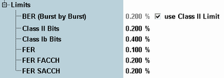

Limit Settings
The "Limits" section of the "GSM BER Configuration" dialog defines upper limits for the results of the BER CS measurement.
The conformance test specification 3GPP TS 51.010 defines various test cases related to the BER limits. Adjust the values in accordance with your measurement.

Limit settings
Defines individual upper limits for the results of the "BER CS" measurement.
The limits apply to the following results:
- "BER (Burst by Burst)": BER result in burst by burst mode. This limit can be configured individually, but for reasons of backward compatibility it is by default coupled to the class II bits limit.
- "Class II Bits": all BER and RBER results for class II bits (except "Burst by Burst" mode)
- "Class Ib Bits": all BER and RBER results for class Ib bits
- "FER": FER result in mode "RBER/FER" and "AMR Inband FER"
- "FER FACCH": FER result in mode "FER FACCH"
- "FER SACCH": FER result in mode "FER SACCH"
Option R&S CMW-KS210 required for FER FACCH and FER SACCH limits.
Remote command: